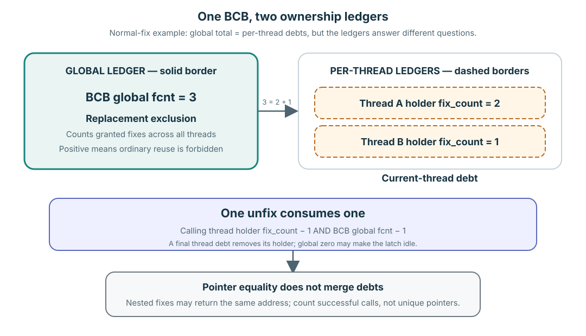

Success creates debt; non-acquisition does not
Every successful fix creates exactly one release debt. One matching unfix repays exactly one debt.
A request that returns without a grant—such as an expected resident-only miss, a conditional conflict, a timeout, or an interrupt—creates no successful ownership and therefore no unfix debt. The accounting boundary is the grant, not entry into pgbuf_fix().
Global exclusion is not thread attribution

In this closed example, 3 = 2 + 1; the source stores the answers in different owners.
| Ledger | Question answered | What it cannot answer alone |
|---|---|---|
BCB global fcnt | How many granted fixes protect this BCB across all threads? | Which thread owes each release. |
Thread holder fix_count | How many nested debts does this thread owe to this BCB? | How many other threads hold it. |
The BCB does not own a complete list of holder threads. Attribution is oriented from each thread's holder anchor toward the BCBs that thread owes.
Verified mechanism: holder and atomic-latch fcnt structures are at pinned page_buffer.c:460–488; grant updates are routed through 6277–6634.
One page, three successful calls
Start at global fcnt = 0. Predict all six rows before using the simulator:
- A fixes successfully.
- A fixes the same page successfully again.
- B fixes it successfully under a compatible READ latch.
- A unfixes once.
- B unfixes once.
- A unfixes finally.
For every row, write global fcnt, A's holder count, B's holder count, and who may still use a borrowed pointer.
Run the ledger after predicting it
fcnt0| # | Event | Global | A holder | B holder |
|---|
Three equal addresses still represent three debts
All three successful calls may return the same address because they borrow the same resident frame. That does not collapse their call-level obligations. Count successful grants, not unique pointer values.
After A's first unfix, A still has one nested debt and may continue using the resident bytes under that remaining ownership. After B's unfix, B's holder is removed and B may not use its borrowed pointer. After A's final unfix, neither thread owns access from this sequence.
Release ownership without inventing side effects
One normal unfix decrements the calling thread's nested holder debt and the BCB global count. The holder record is removed when that thread reaches zero. When global fcnt reaches zero, the BCB may become latch-idle and may re-enter replacement consideration.
Unfix is not commit, flush, eviction, invalidation, or deallocation.
Global zero is necessary for ordinary victim reuse but not sufficient. Dirty/flushing state, waiters, replacement-zone membership, and protected revalidation still matter.
Verified mechanism: holder decrement is at page_buffer.c:6128–6184; global decrement and possible idle transition are at 6636–6703; the caller-facing unfix route is at pinned 3062–3201.
Defend the ledger without the simulator
Prompt
Explain the A×2, B×1 sequence from memory. Why are there three debts if all calls return the same PAGE_PTR, and what does final global fcnt == 0 establish—and not establish?
Model / recommended structure: successful-call count → global total → per-thread attribution → one unfix per debt → pointer lifetime → replacement boundary.
Your task: include one rejected unfix synonym and one source-evidence label.
Paste your answer into the chat. I will verify the counts, pointer lifetime, and replacement boundary before recording mastery.
Trace one increment and one decrement
Read page_buffer.c:6277–6537 for a normal grant and 6128–6184,6636–6703 for one normal release. Mark which owner stores each count and the exact point where a holder disappears.
Open the printable ownership-debt card →